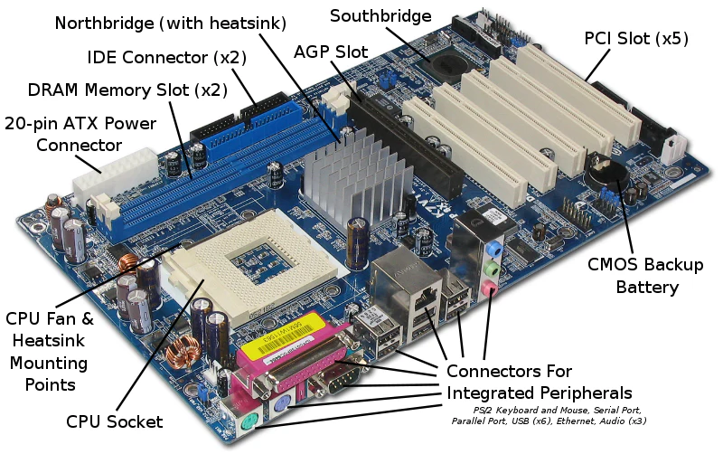
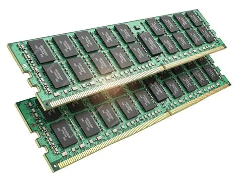
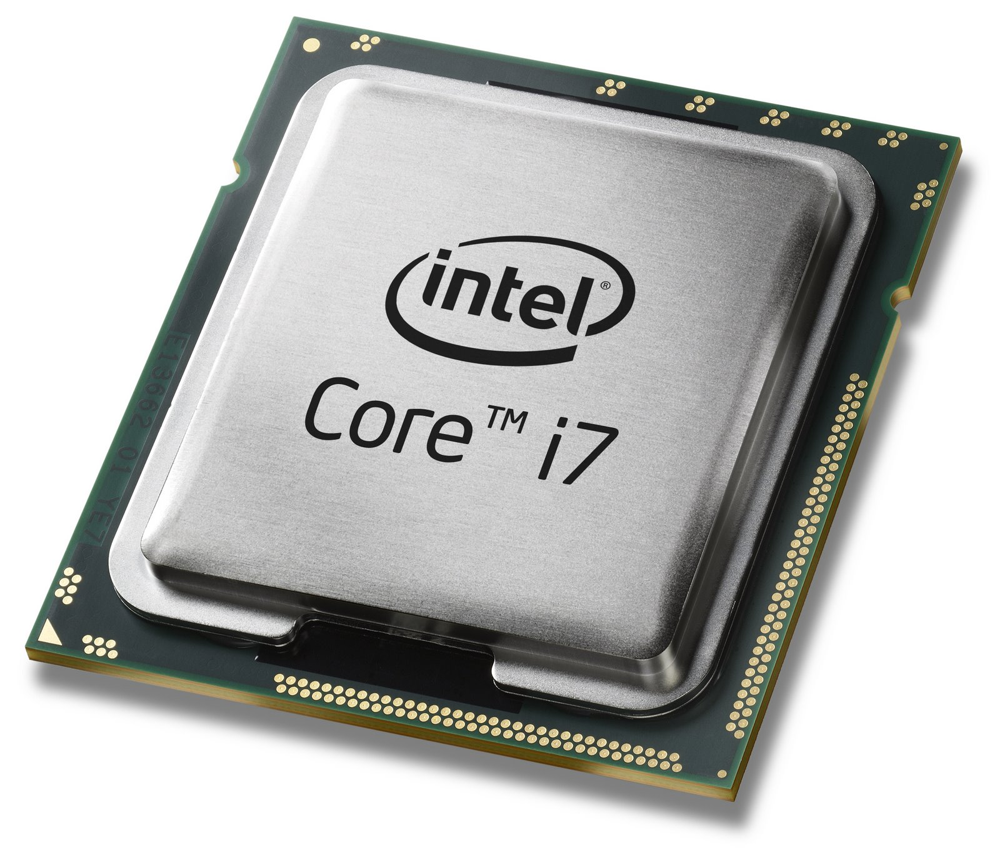
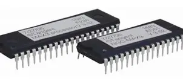
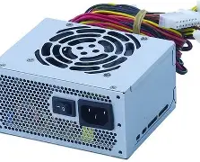
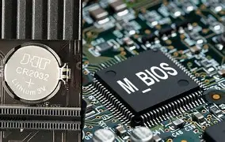
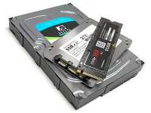

Motherboard
The motherboard is the main circuit board of a computer. It connects the CPU, memory, storage, and other peripherals.
RAM
Specifically, RAM stands for “Random Access Memory” or “Ready Access Memory”. It is a temporary notepad where your computer sends information to disk, or to the storage place of instructions from other input devices. The term “random access” indicates that memory locations in RAM are accessible in any order unlike sequential access of a data cassette tape.
CPU
CPU means ‘Central Processing Unit’. This is the place of computer data handling. Moreover, it does all the data manipulation, calculations and formatting data for output. Hence, whenever someone buys a computer, he/she becomes more conscious about the CPU and its capabilities. The execution of the instructions within the computer system is very fast.
ROM
Read-only memory (ROM) is used to store data that controls the most basic computer functionality, such as starting up, detecting peripherals and operating the computer fan. As the name suggests, the data cannot be edited by the system or users and, unlike RAM, the data stays recorded even when the computer is off.
Power Unit

Redundant Power Supply vs Uninterruptible Power Supply (RPS vs UPS).
The redundant power supply (RPS) is a kind of power supply used in the server. It is composed of two identical power supplies. The chip control power supply performs load balancing. When one power supply fails, the other power supply can take over its work immediately.
UPS, that is, uninterruptible power supply, is a system device that connects the battery (mostly lead-acid maintenance-free battery) to the host, and converts the DC power into commercial power through the module circuit of the host inverter. It is mainly used to provide a stable and uninterrupted power supply to a single computer, computer network system or other power electronic equipment such as solenoid valves and pressure transmitters.
CMOS
CMOS refers to a small area of memory on the motherboard that stores BIOS/UEFI settings (like time, date, boot order, hardware configuration). It is powered by a small battery—called the CMOS battery—so it retains data even when the computer is turned off.
Storage Drive
Your computer’s hard disk drive is like an audio CD that you possess at home – except your computer can read and write to it. In other words, your computer can take data from your hard drive (to process it in the CPU or place it in RAM to work with).
InsysdeH2 Setup Utility
Rev. 5.0
- Information
- Main
- Advanced
- Security
- Boot
- Exit
System Time: [11:09:40]
System Date: [11:09:40]
Network Boot: [Disable]
F12 Boot Menu: [Enable]
Wake on LAN: [Disable]
Touchpad: [Advanced]
1. id Open Resume: [Enable]
edwewaefw e
Items specific Help.